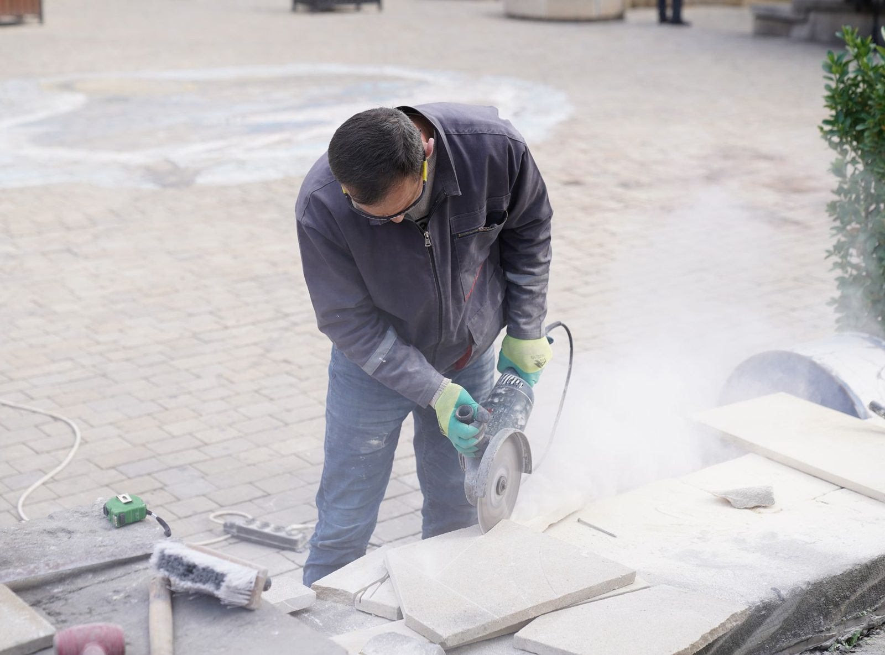
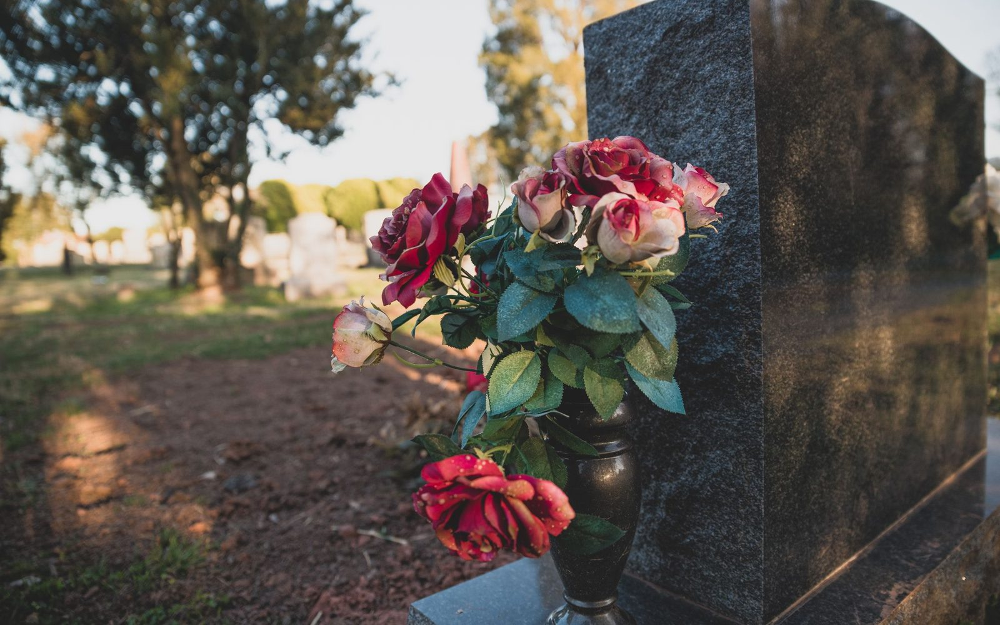
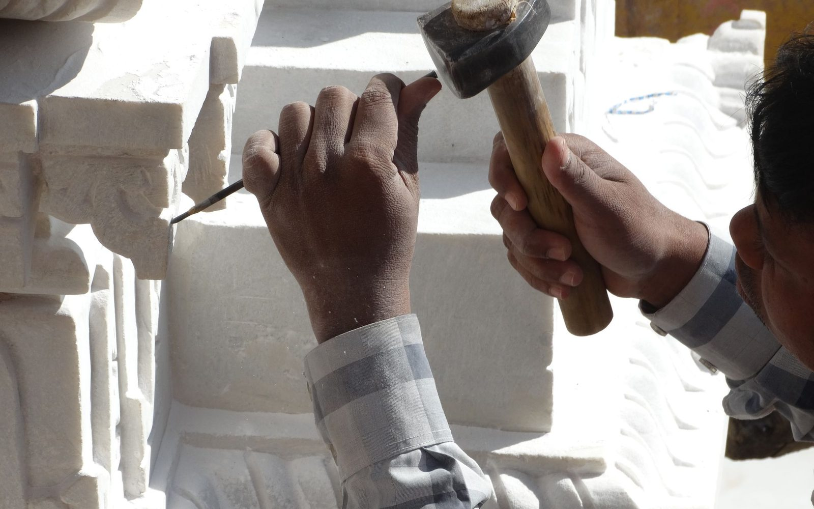
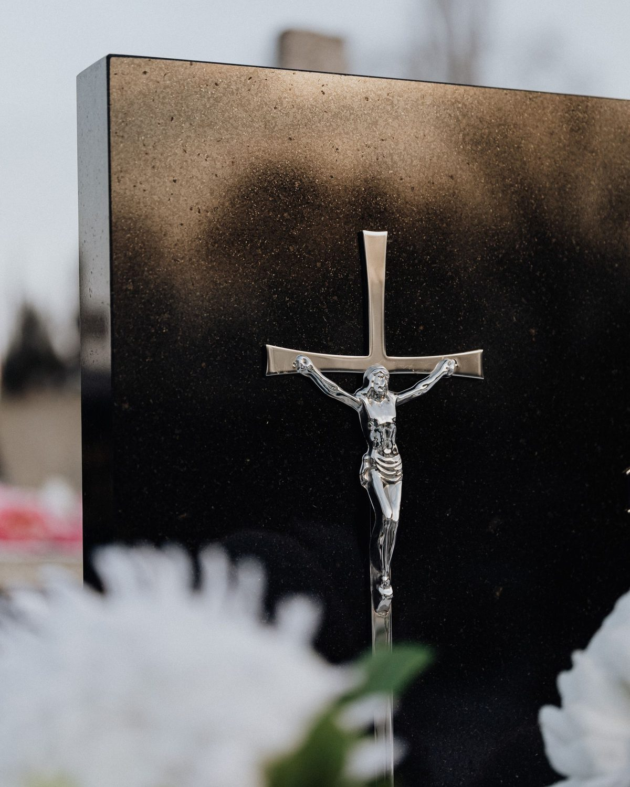

Nagrobki z granitu w Stąporkowie, od projektu do montażu
Najpierw zobaczysz projekt i pełną wycenę. Kamień zamawiamy dopiero, gdy wszystko Ci pasuje.
Stawiamy pomniki, które nie ruszą się po zimie.
Nagrobek robimy w całości u siebie: projekt z wymiarami, cięcie i polerowanie granitu, liternictwo, a na końcu montaż na cmentarzu. Wszystkie etapy robimy sami, więc za każdy odpowiadamy my.
Fundament zbroimy i dajemy mu związać. Dzięki temu pomnik stoi prosto także po kilku zimach, a rodzina nie musi wracać z poprawkami.

Najpierw rozmowa, potem kamień.
Nie zamawiamy kamienia, dopóki nie zobaczysz projektu i nie zaakceptujesz ceny.
Bezpłatna wycena, projekt przed decyzją i żadnego pośpiechu.
Projekt nagrobka z wymiarami, dobrany do kwatery i sąsiednich pomników. Widzisz kształt, kamień i rozmieszczenie napisów, zanim cokolwiek zamówimy.
Cenę rozpisaną na pozycje: kamień, obróbka, liternictwo, fundament, montaż. Wiesz, za co płacisz i gdzie można coś zmienić.
Uczciwą ocenę starego nagrobka. Jeśli kamień nadaje się już tylko do wymiany, mówimy to wprost i nie bierzemy pieniędzy za renowację, która nie potrwa.
Od rozmowy do montażu.
Cztery kroki, a na każdym wiesz, co się dzieje. Kliknij krok, żeby zobaczyć szczegóły.
Nagrobki, płyty i dodatki z granitu
Nagrobki pojedyncze i podwójne, lampiony, wazony i tablice. Każdy element dobieramy kolorem i fakturą do pomnika.


Zdjęcia poglądowe
Z czego składa się cena nagrobka?
Dwie wyceny tego samego pomnika potrafią się mocno różnić, a jedna kwota bez rozpisania niewiele mówi. U nas każda pozycja jest osobno, więc widzisz, za co płacisz i gdzie da się coś zmienić, zanim cokolwiek zamówimy.
Poproś o wycenę- Kamień i obróbkapozycja
- Liternictwo i dodatkipozycja
- Fundament zbrojonypozycja
- Demontaż starego nagrobkajeśli trzeba
- Transport i montażpozycja
Wszystko, czego potrzeba przy grobie.
Od nowego nagrobka po dopis na istniejącej płycie. Robimy od początku do końca sami, łącznie z montażem na cmentarzu.
Cała oferta
Pojedyncze, podwójne i rodzinne, grobowce. Projekt, obróbka, liternictwo i montaż w jednych rękach.
Nagrobki pojedyncze
Od projektu z wymiarami po montaż na zbrojonym fundamencie.
Podwójne i rodzinne
Pełne zbrojenie pod cięższą płytę, czytelne napisy obu osób.
Grobowce i piwnice
Komory murowane pod wymiar kwatery, z odprowadzeniem wody.
Wazony, lampiony, tablice
Z kamienia zgranego z pomnikiem, mocowane na stałe.

Nowe napisy, odnowione złocenia i odświeżone płyty. Grób znów wygląda na zadbany.
Liternictwo i dopisy
Nowy napis spójny z tym, który już jest na płycie.
Odnowienie złoceń
Stary napis czyścimy i malujemy na nowo, widać go z daleka.
Renowacja i czyszczenie
Uzupełnione ubytki, zaimpregnowana płyta, odnowione litery.
Formalności z cmentarzem
Ustalenia z zarządcą cmentarza są po naszej stronie.
Nie wiesz, czego potrzebujesz? Zapytaj o wycenę albo zadzwoń: +48 604 808 852.
Dlaczego warto zrobić nagrobek u nas.
Mówimy wprost
Jeśli wystarczy renowacja, nie sprzedamy Ci nowego nagrobka.
Zbrojony fundament
Dajemy mu związać, dlatego pomnik stoi prosto także po latach.
Znamy tutejsze cmentarze
Wiemy, gdzie grunt długo osiada i jak to uwzględnić.
Własny zakład
Projekt, obróbka, liternictwo i montaż robimy sami.

Zakład w Stąporkowie, przy ul. 1 Maja 121
O co pytają nas najczęściej
Krótkie odpowiedzi na pytania o nagrobki, terminy i to, jak pracujemy.
/01Czy robicie nagrobek od projektu do montażu?+
Tak. Projekt z wymiarami, cięcie i polerowanie kamienia, liternictwo, fundament i montaż na cmentarzu robimy sami, we własnym zakładzie.
/02Czy zobaczę projekt, zanim zapłacę za kamień?+
Tak. Najpierw dostajesz projekt i wycenę rozpisaną na pozycje. Kamień zamawiamy dopiero wtedy, gdy wszystko Ci pasuje.
/03Kiedy można postawić nagrobek po pogrzebie?+
Zwykle warto odczekać, aż ziemia w kwaterze osiądzie. Na miejscu ocenimy grunt i podpowiemy dobry termin montażu.
/04Czy załatwiacie formalności na cmentarzu?+
Tak, ustalenia z zarządcą cmentarza są po naszej stronie. Powiemy, czego potrzebujemy od rodziny.
/05Czy dorobicie napis na istniejącym nagrobku?+
Tak. Dorabiamy nowe napisy i odnawiamy stare złocenia, tak żeby całość była spójna.
Zacznijmy od bezpłatnej wyceny.
Opowiedz, czego potrzebujesz. Odpowiemy konkretnie i przygotujemy wycenę rozpisaną na pozycje.